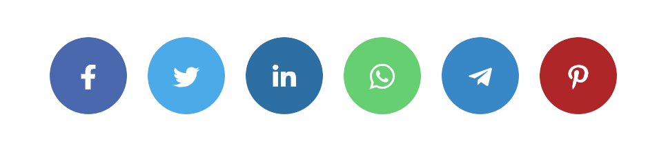

HVA ER CMS?
CMS står for Content Management System, dette på norsk er altså en publiseringsløsning som lar deg redigere og organisere innholdet i din nettside. Det finnes mange forskjellige CMS programmer som blir brukt i dag, en av de mest populære er Wordpress. CMS blir brukt i alle nettsider i dag, med tanke p hvilken du bruker så har du forskjellige muligheter til å redigere og organisere nettsiden din slik at den blir klar til bruk. Noen CMS er ikke gratis og koster penger, men det finnes alltid gratis plugins og forskjellige egenskaper CMS har som du kan ta bruk i nettsiden din. Når du velger hvilken CMS du skal bruke må man tenke på hvor komplisert du vil at nettsiden din skal være, er det kanskje en enkel nettside du vil publisere er nok Wordpress enklest for dette siden det ikke har så store krav på hvordan nettsiden skal fungere. I dagens nettsider blir det brukt noe som heter Tradisjonell CMS og Headless CMS. Les mer om hva disse to gjør og innebærer i en nettside og hvordan du burde bruke disse.
HVA ER HEADLESS CMS OG HVORDAN FÅR MAN BRUKT DET?
Headless CMS er ganske nytt men lett kommer inn i markedet, og folk flest mener at dette er framtiden for publiserings løsning. Men hva er det fornoe? Headless CMS er en løsning som spearerer innholdet fra hvor og hvordan det lages, dette innholdet blir hentet av en API. Hva er en API? Det står for Application Programming Interface og blir brukt til hjelpe systemer å «snakke» med hverandre uten at andre mennesker er involvert. Du har nesten ingen begrensinger på hvilke plugins eller teknologier du vil ha på nettsiden din siden det kan komme inn i CMS'et når som helst. Dette brukes altså ikke en kode. Hvordan får du brukt det i nettsiden din? Jo, Når du vil ha Headless CMS i nettsiden så slipper du å endre kodene dine for at CMS skal fungere, dette gjør API’en for deg og henter den informasjonen du trenger for at Headless CMS’et skal fungere.
HVA ER TRADISJONELL CMS OG HVORDAN FÅR DU BRUKT DET?
Tradisjonell CMS er noe som man bruker selv og ikke blir styrt av for en API som henter informasjonen for deg. Tradisjonell mer mindre avansert og mindre komplisert å bruke, derfor om du vil ha en enkel nettside som du har lett styr over så er tradisjonell CMS riktig bruk for deg. Wordpress som nevnt tidligere er ett av de tradisjonelle CMS'ene og er enklest å bruke når du ikke trenger så mye avanserte teknologier. I et tradisjonellt cms så har du som vanlig et admin panel som gir eieren en full oversikt over hva man kan redigere, slette og opprette. Du får også en oversikt er en database hvor all innholdet blir lagret.
HVA ER FORSKJELLEN MELLOM HEADLESS OG TRADISJONELL CMS?
Sagt så blir Headless brukt av en API og tradisjonell er mer brukt for brukeren slik at mennesket har mye kontroll over nettsiden, teknologien er nok den største forskjellen mellom de to ettersom det er brukeren som velger hvilken teknologi som skal blir brukt i nettsiden. Så tradisjonell er mer enkelt å brukte og er ikke så veldig avansert med avanserte tekonologer, mens headless er mer avansert og komplisert å bruke ettersom det blir styrt av en API og ikke mennesket, men mennesket har kontroll over hvilke teknologier som blir brukt.
Wordpress
Som sagt så er Wordpress en av de mest populære CMS publiserings programmet som blir brukt. Dette er ettersom de har mange plugins og maler som er ferdig laget og klar til bruk i din nettside ved at det installeres. Når det kommer til wordpress så har du uendlig med løsninger siden i dette cms’et kon du selv velge og du vil ha en nettside som er for bedriften din eller om du vil ha en hel ny nettbutikk som for eksempel zalando. Wordpress er mest brukt i de fleste nettsider og blir brukt i for eksempel SONY. Dette er gratis og åpen kilde kode.
Joomla
Joomla er også ett av de mest populære CMS publiserings nettsidene. Akuratt som wordpress har man tilgang til mange plugins og teknologier som gjør det enkelt å bruke nettsiden og ha kontroll over den. Joomla i dag blir brukt i kjente nettsider som for eksempel e-bay dette er grunnet til språkene de tilbyr altså 64 forskjellige språk og mange tilleggsfunksjoner man kan bruke, joomla akuratt som wordpress er har en begrensing og det er fantasien din.
Drupal
Drupal er en av de CMS’ene som ikke er gratis og koster altså penger for å få brukt hele programmet. Det er noen gratis plugins og maler som du får brukt uten å kjøpe det. Drupal krever mer enn joomla og wordpress når det kommer til bruk, men kan lett gjøre en en vanlig nettside til en hel nettbutikk om dette er ønskelig. I motsetning til joomla og wordpress har drupal 90 forskjellige språk oversatt, og blir i dag brukt i for eksempel Intel.
KILDER
https://www.zondo.no/de-5-storste-cms-losninger/
https://guilty.no/blogg/hva-er-cms
https://guilty.no/blogg/headless-cms-slik-er-det-til-forskjell-fra-et-tradisjonelt-cms